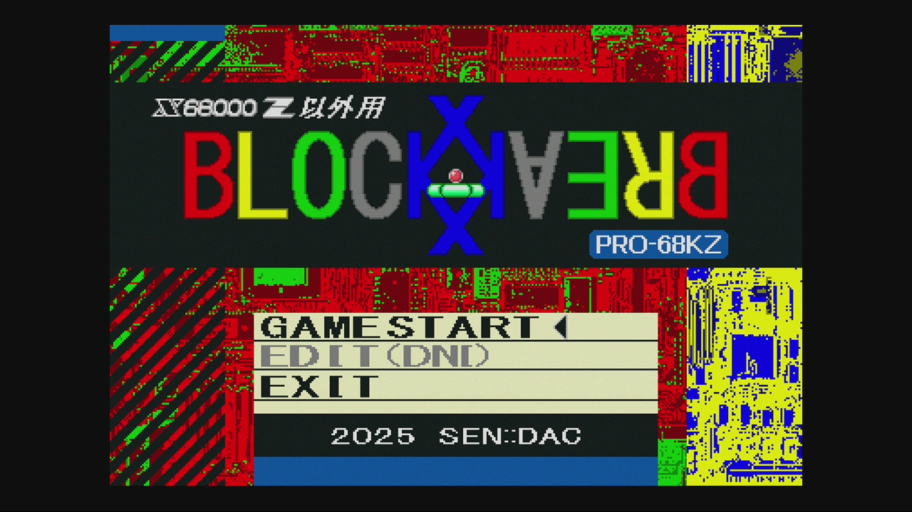
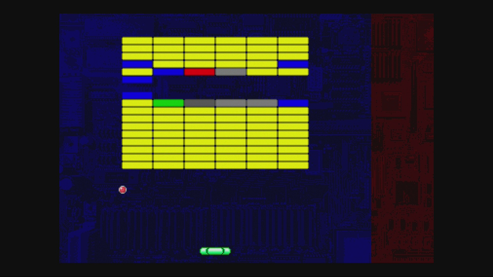
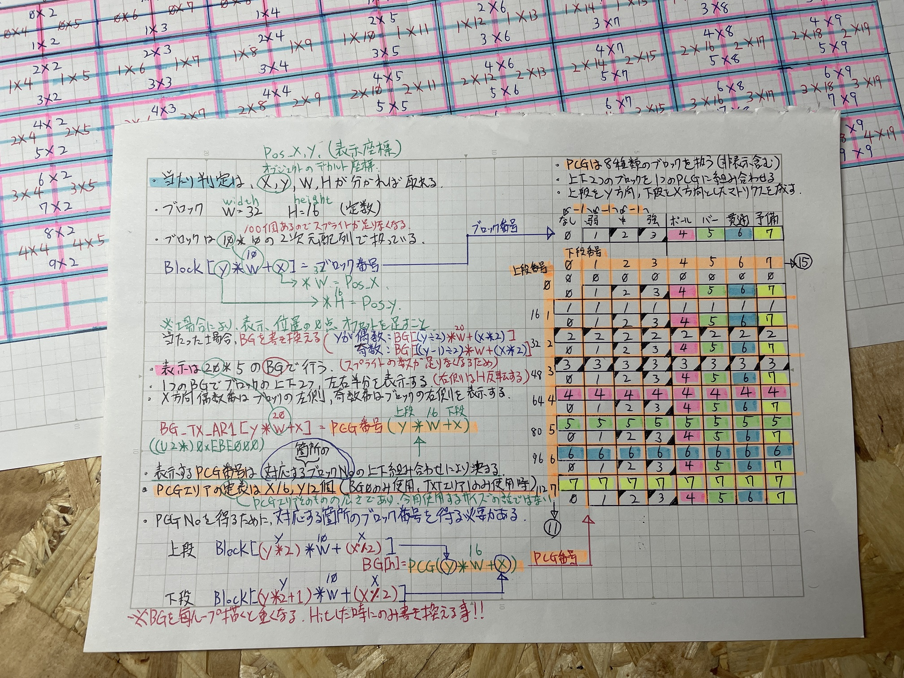

ゲーム制作 進捗報告 ＃0
Archive Note：
こちらは X68000 Z コミュニティサイト(Z-CLUB) 投稿記事の再構成ログです。
はじめてX68000用のゲームソフトを作成した際の記録です(作品の公開自体が初でした)。
当時の試行錯誤を尊重し、内容や知見は投稿時点のものをベースとしています。
元投稿：https://dev.zuiki.com/project-z/community/post/detail/1257
2024-11-24 投稿：
製作中の X68000(Z)用 自作ゲームのタイトル画面を描きました。
素人の自分が描いた絵を人前に晒すのは、思いのほか怖い事ですね。
どこかで勇気を持たないと先に進めないので、勢いをつけるために貼らせていただきます。
既に自作ゲームを公開されている先輩方は、この恐怖を乗り越えているのでしょうか？
それとも、そもそもこういった事に恐怖を感じないのでしょうか？
落書き程度の絵は描いた事がありますが、今回のように「タイトル画面」など描いた事は無いです。
また、タイトル画面となると、そもそものタイトルはどうしようかとか、ロゴや画面全体のデザインをどうするかなど考える事が多いです。
ゲームのタイトルをちゃんと決めた事もないですし、何かのデザインをした事もありません。
とりあえず無我夢中で描きましたが、何だか凄くクレイジーな感じになりましたね...。

中身は至って普通のブロック崩しです。

もっとオリジナリティのある物を作るべきなのかも知れませんが、今回は習作としての位置づけで考えています。
「初めて扱う環境では先ずブロック崩しを作ると良い」と教わった事があります。
この教えは僕の中では鉄板だと思っています。
これまで Win32API、DirectX7、HSP(Hot Soup Processor)、Java、あとはSwitchのプチコン4でブロック崩しを作ってきました。
WindowsAPIとDirectXはAPIの仕様を理解し、それを利用してゲーム製作に最低限必要な描画と入力情報を扱う仕組みから作る必要があります。
HSPとプチコンは、その辺を行わなくても直ぐにゲームそのものを作り始められます。
(ボタン入力の [押した瞬間] [押している] [離した瞬間] [離している] の状態分けは作る必要がありますが)
その辺の仕組みが整備できれば、ブロック崩し(ゲーム部分)そのものは数時間で作れるはずです。
何言語だろうと、ゲーム部分のアルゴリズムは変わらないです。
なので、X68000でも基底部分の仕組み作りさえできればサクッと作れるものだろうと考えていました。
しかし、甘かったです。
他の環境と大差がないと思い込んでいた「ゲーム部分」についても、X68000環境においては今までの知見が全く通用しない事を思い知ります。
例えば、これまでボールやバーの部分、崩す対象となるブロックは全てスプライトで表示していました。
プチコン4で扱えるスプライトの数は4096枚、幅 高さ といったサイズは0～2048で扱えて充分な量があります。
また、DirectX環境では好きな数を、好きな大きさで四角い板状のポリゴンを用意し、そこに画像を貼りつけた物をスプライトと勝手に呼んでいました。
メモリが足りる限り、ほぼ無限の数、及びサイズのスプライトを表示できるのです。
と、言うか背景も含めて全ての表示がスプライト扱いでした。
(スプライトと呼んでいましたが厳密に言うと、これはビルボードと呼ばれる手法ですね)
しかし、これがX68000用として作るとなると、かなり勝手が変わってきます。
まず、同時に表示できるスプライトの数が128個までという制限があります。
そして、定義しておけるスプライトの数も256個までです(BG画面を使うともっと減る)。
更に16*16のサイズしか扱えず、大きなキャラクターを表示したい場合は複数を繋ぎ合わせる必要があります。
(これは制約と言うより、むしろ醍醐味ですね。ハード仕様が直接絡んでくるのが非常に面白いです。)
最初、この仕様を見た時には「本格的な物を作らない限り充分な数があるな」と考えていました。
しかし、実際にX68000で、"たかだか"ブロック崩しを作り始めると、ボールやバーはともかく、ブロックについては仮に10*10マスで100個、扱いたいブロックのサイズが32*8なので、1つのブロックにつき2枚のスプライトが必要となり、合計200個のスプライトが必要となってしまいます。
今後、アイテム等も表示させたいですし、絶対にスプライトの数が足りないですね。
どうするか悩みました。
BG画面を使う事は割と初期の段階で思いついていたのですが、1つのチップのサイズが(今回使用してる画面モードでは)16*16に縛られています。
いっその事、1つ16*16のブロックを崩すゲームにするか？
などと考えたりもしましたが、やはり最初に思い描いたものと違う形にはしたくありませんでした。
(あと、当初BGの透明色が表示されてしまって悩んでいましたが、パレットの末尾1bit(輝度)を1から0にすることで透過してくれるようになりました)
そんなあるとき、(散歩中に)ふと実現方法を閃きます。
しかし、具体的にどういったコードを書けば良いのかが、頭の中で整理できませんでした。
ここで、Z-CLUBにて「方眼紙に書く」というアドバイスをくださった方を思い出します。
さっそく実践してみましょう。

えっと...非常にキタナイ手書き文字で申し訳ないです...w (晒していくスタイル)
でも、この作業により本当に驚くほど、どのようなプログラムを書くべきかが浮かび上がってきました。
「方眼紙に書く」というアドバイスを下さった方に感謝です。
ありがとうございます。
さて、ブロックの表示はできたのですが、更に別の問題が発生します。
これまでの手法では、全て「ボールを "当てられる側" のモノ」で当たり判定を取っていました。
ボールやバーはともかく、ブロックについては仮に10*10マスで100回の当たり判定をループすると動作が異常に重たくなってしまったのです。
これについては、ボールの座標(今回は現状、中央上下、中央左右の4点取り)にブロックが存在するのか？といった考え方に変える事で解決しました。
過去に Windows向けに「スーパーマリオブラザーズ」を模倣した物を作った際、キャラクターと地形の当たり判定で同じような事をした記憶があります。
因みに、このマリオの模倣作は画面外も含めたステージ全体を2重ループで全てのマップチップを毎フレーム描画していましたが(爆)が、それでもWindowsマシンのパワーに任せて何とかプレイ可能な速度で動いていました。
しかし、X68000のマシンパワーでは、そのような作り方が不可能なため、根本的に考え方を変えていく必要に迫られた訳です。
描画～更新も同じで、毎フレーム全てのBGを更新すると非常に重くなりましたが「当たったら、そこだけ更新」とすれば速度を保てるようになりました。
ちょっと前後して制作最初期の頃の話になりますが、僕が触った過去の環境では用意された関数(API)に必要な引数を与え、決められた手順で叩くだけで目的を達成できてので、プログラミングってそういう物だと思っていました。
X68000にもIOCSコールなど便利な関数群が用意されていますが、その一部についてはコールすると重たくなってしまう問題に悩まされました。
とくにSP_REGST()は、1つ2つ表示している分には良いですが、多くのスプライトを表示する(動かす)と非常に重くなってしまいました。
因みに、これはをXC-Llib使用した場合です。
LIBCではイチキャットさんのサンプルを見る限りこうはならないようですが、Z-MUSICとLIBCが共存した環境を構築できなかったので現状はXC-Llib縛りになっています。
結局、このIOCSが重い問題はハードウェア(レジスタやVRAM)を直叩きする事で解決しました。
X68000 Z(EAK)が登場してから、これまでInside X68000を頑張って読んできたことと、過去に少しH8マイコンやPICマイコンで遊んでいた頃の「組み込み系プログラミング」的な経験が活きました。
今では逆に、IOCSコールが具体的に何をやっているのか気になります。
なんとかして中身を見る方法は無いのでしょうか？
(コール前後でメモリを全ダンプして差分を取る？でもWriteOnly属性のビット(X68kにあったっけ？)は分からないですよね)
あと、Windowsでは、640*480や800*600といった画面サイズで作成していたのですが、このサイズと同じ画面いっぱいのBMP画像が一瞬で表示できていました。
X68000では、今回384*256の画面モードで制作していますが、この384*256サイズで画面いっぱいのBMP画像を表示させた場合、まるで劇場の幕が下りてくるかのようにゆっくりと上からデロデロ～と描かれるのです。
グラフィック画面でも、テキスト画面でも、とにかく遅い。
と、言う訳でVRAMに対しDMA転送を使用する事にしました。
速くなりました。
DMA転送って、やはり速いのだなと実感できました。
しかし、やはりまだ一瞬シュッと描いている瞬間が見えてしまいます。
そこで更に「じゃあ、描いてる間は隠そう」と考え、当初はCONTRAST()を使ってフェードイン/アウトを作ってみたりしました。
これはこれで良いですし、使いどころはあると思うのですが、その後、単にパレットをオール黒にしてVRAMに書き込み、終わったら本来のパレットを設定する手法に変更しました。
そして、ここまで挙げて来た各種「"動作が重い問題" シリーズ」にもしかしたら関連ありそうな部分として、FPS(動作速度)制御の問題があります。
(最後の画面いっぱいのVRAM書き込みに関しては、ゲームの動的な期間ではなく前処理の期間に行う事なので無関係なのですが)
何をしたいのかと言うと、実行環境(機種)により動作速度が異なってもゲームは一定の速度で動く事を実現したいのです。
X68000は基本10MHz動作ですが、上位機種であるXVIの16MHzモードなど(改造していたら24MHzとかも)でクロックが高速になっても、ゲームは一定の速度で動作してほしいのです。
また同じ10MHzを名乗っていても、実機やXM6(Windows上で動作するエミュレータ)の10MHz動作に比べてZの10MHz動作は若干、遅く感じます。
プチコン4(Nintendo Switch上でBASICが書ける)などでは考える必要がありませんね。
実行環境は必ず同じ動作速度のゲーム機を使っているはずですので、適当なウェイトを入れれば、どのお宅でも同じ動作速度になるはずです。
これが、PC用のゲームになりますと実行環境は様々ですので、以下のような処理が必要になります。
※注：
以下 FPS(ゲーム速度)の制御に関しては、この当時に使用していた手法を書かせていただいています。
X68000におけるゲームプログラミングではGPIPレジスタ($E88001)のV-DISPビットを確認する手法が一般的かと思われます(Inside X68000 P.81を参照)。
Z-CLUBにてアドバイスをいただき、その後このV-DISPを確認する手法に変更したという経緯があります。
1秒間に処理を実行したい回数をnとして、1秒(1000ms)÷nで "1回の処理で使える時間" を算出します。
ここで1回の処理にかかる時間が "1回の処理で使える時間" を超えてしまう場合は処理を見直すか、最悪はnの数を減らして調整しましょう...。
超えない場合は、余った時間分スリープ(ウェイト)して待ちます。
Windows向けの制作の際には時間計測にtimeGetTime()という関数を使用していました。
これは最低1ms単位で時間を取得できるものです。
X68000にこの処理を移植するにあたり、timeGetTime()に代わるモノが無いか調べた所、ONTIME()という関数を見つけました。
こちらは...最低10ms単位でしか時間を取得できません。
とはいえ、処理の方の桁を合わせてやれば、たぶん動くだろうという事で実装。
結果としては目的自体は達成できて、本体(エミュレータ)側が何MHzだろうと同じ速度でゲームが動いてくれるようになりました。
ZでもXM6の10MHzモードと同じ速度で動作してくれています。
しかし、謎現象も起きており、nを幾つにしても秒間100回実行されてるっぽいんですよね...デバッグの表示が何らかの理由で間違ってなければですが。
普通はFPS:30とか60とか120を設定すると思うのです。
(値の根拠はよく知りませんが、人間の目を騙すのに丁度良いタイミングだと聞いた事があるような？)
この辺の謎動作が前出の各種 "動作重い問題シリーズ" に何らかの影響があるのかも知れません。
しかしながら、実害はありませんし目的は達成できているので、とりあえずはこのまま使う事にしました。
因みに、ONTIME()は23時間59分59秒99を超えるとクリアされ0からまた始まる仕様なので、その対策の処理も入れてあげる必要があります。
試しに対策前にテストで起動～24時間放置したら予想通りゲームが止まってしまいました。
現在時より計測開始時の方が未来になってしまった(笑)せいでスリープ(ウェイト)時間がバグったのだと思います。
と、言う訳で対策です。
if(現在時 < 計測開始時){ 現在時 += 24時間; }
これで一定のゲームスピードを保ちつつ、24時間経過後も止まる事なく動いてくれるようになりました。
分かってしまえば単純な話なのですが、実は当時、結構これに長い時間をかけて悩んでいました。
このように、様々な課題をクリアしてきた昨今ですが、これにより冒頭の
「初めて扱う環境では先ずブロック崩しを作ると良い」
という教えには、実はもっと深い意味があった事に気付かされた訳です。
「たかがブロック崩し！数時間で作れるはず！！」と思っていたのですが、ここまで困難を伴うとは思いもよりませんでした。
現在の進捗は50％といった所で、もしかしたらまだまだ思いもよらない壁が立ちはだかる可能性があります。
しかしながら、資料を読んだり、小さなテストプログラムを組んでいる段階では絶対に分からない "X68000でゲームを作る場合の特有のクセ" のような物が見えてきた事と、この制作を通じ、前出の基底部分と言うのですかね？その辺が固まってきており、恐らくこのブロック崩しが完成する頃には、ゲーム制作に必要なライブラリ群が整備された状態になっていると思われます。
あと余談ですが、タイトルロゴにX68000 Z "以外"用 と書いていますが..。
これは、XM6だと正常に動作するのに、Zだと稀にスプライトの表示が壊れたり動作がガクついたりするのです...。
実機は現在バラバラに分解しているので未確認ですが、恐らくこれまでの傾向から見て "実機及びXM6では正常に動作するが、Zでだけは意図しない動作をする" ヤツだと思っています。
384*256の特殊画面モードを使っていたり、ここまで書いた理由により随所でハードを直叩きしてる事による影響なのかも知れませんが、よく分からないというのが正直な所です。
できれば "Z対応" としてリリースしたいのですが、やはり、あくまで実機が真だと思いますので、実機で意図通りの動作をするのであれば、Zを動作環境から除外してのリリースになるかも知れません...。
今後のアップデートで改善する事を期待しています。
僕の方でも何とかして実機、XM6、Zで同じ動作にならないか、これから試行錯誤してみようと思っています。
[EOF]